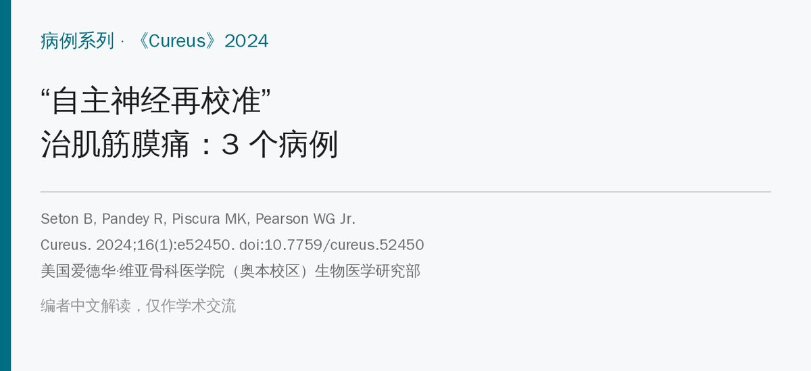
🔖原文信息（编者中文重排）
📚 文献信息
▪ Seton B, Pandey R, Piscura MK, Pearson WG Jr. Autonomic recalibration: a promising approach for alleviating myofascial pain explored in a retrospective case series. Cureus. 2024;16(1):e52450. doi:10.7759/cureus.52450
▪ 作者单位：美国爱德华·维亚骨科医学院（奥本校区）生物医学研究部
▪ 文章类型：回顾性病例系列（3 例）
• 作者提出“自主神经再校准”（AR）：认为慢性肌筋膜痛源于交感神经长期“过度警觉”，先从头到脚触诊找出一碰就躲的部位，再用两种手法“重置反射”，并结合创伤回忆和呼吸
• 3 个病例（9 岁腰椎滑脱、68 岁多次腹部手术后腹痛、56 岁腰椎融合术后痛）都在 1～2 次治疗内疼痛降到 0，两人停用了阿片类药物
• 但这是只有 3 例、没有对照、也没测任何自主神经指标的病例报告，效果好得不寻常，只能当作一种思路，不能当证据
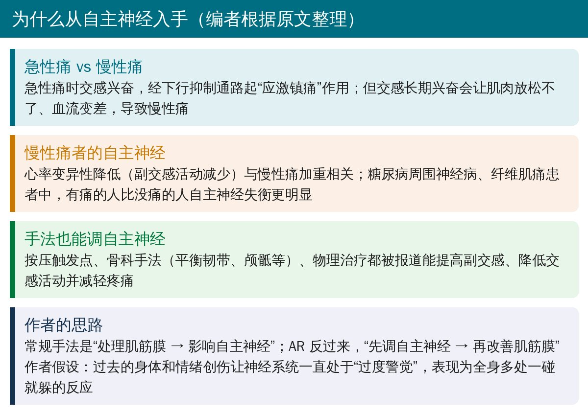
🔖背景（编者整理）
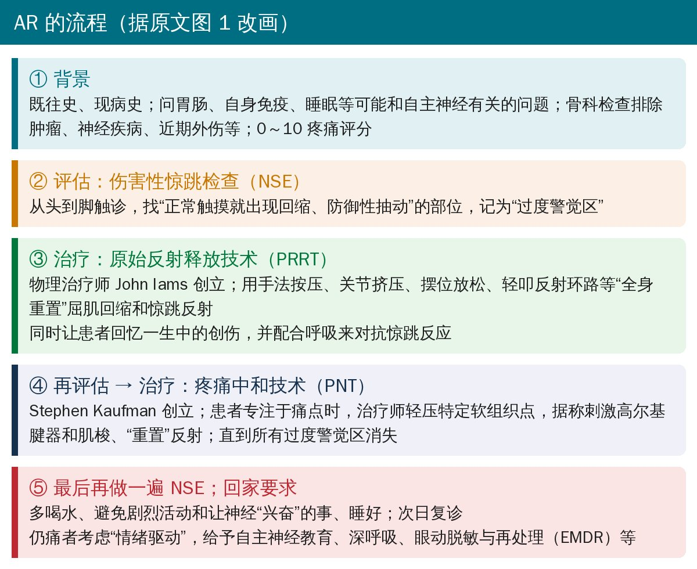
🔖AR 流程（据原文图 1 改画）
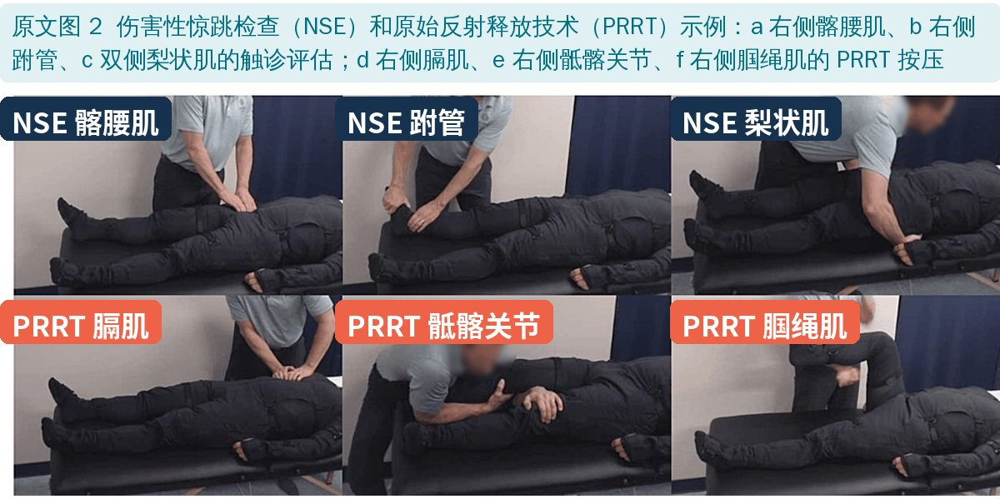
🔖原文图 2：NSE 评估和 PRRT 按压示例
• 伤害性惊跳检查（NSE）：不是找压痛点，而是找“正常力度一碰就回缩、抽动”的部位，作者认为这代表该处的原始保护反射过度兴奋
• 原始反射释放技术（PRRT）：针对屈肌回缩反射和惊跳反射的“全身重置”，包括按压、关节挤压、摆位放松、轻叩；同时让患者回忆过去的创伤并配合呼吸
• 疼痛中和技术（PNT）：患者专注于痛点时，治疗师轻压特定软组织点，直到所有“过度警觉区”消失
• 两种技术都由个人（物理治疗师、医生）创立，原文引用的相关研究也都是病例系列或专著
• 复诊时如果触诊和活动都正常了还痛，作者认为可能有“情绪驱动”，会做自主神经教育，并建议深呼吸、眼动脱敏与再处理（EMDR）等
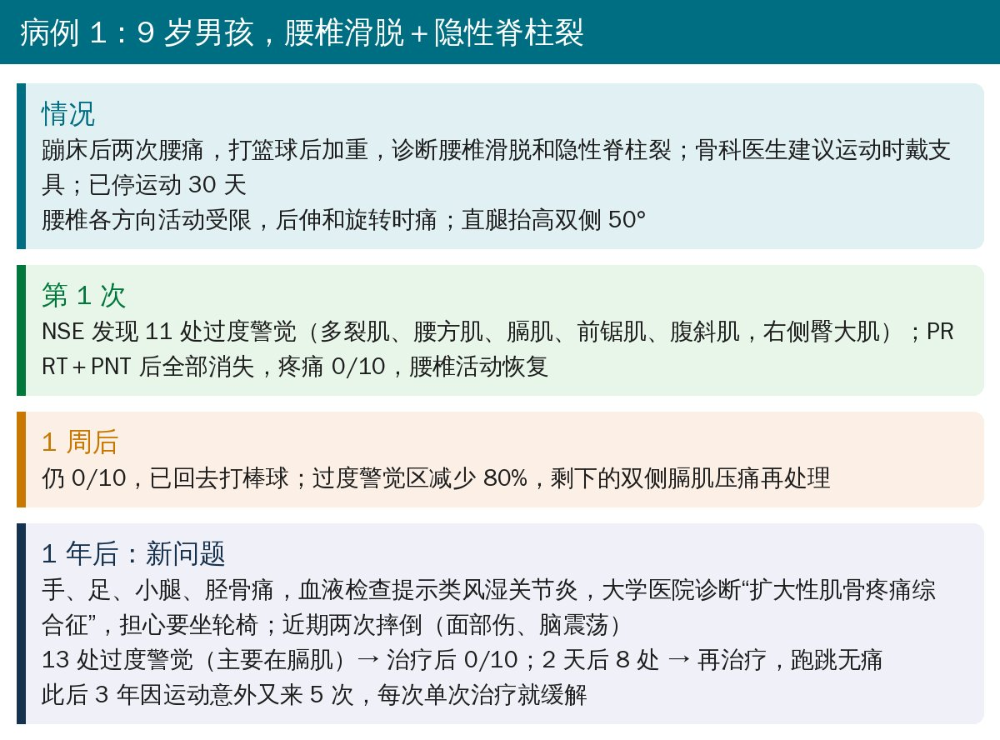
🔖病例 1（编者整理）
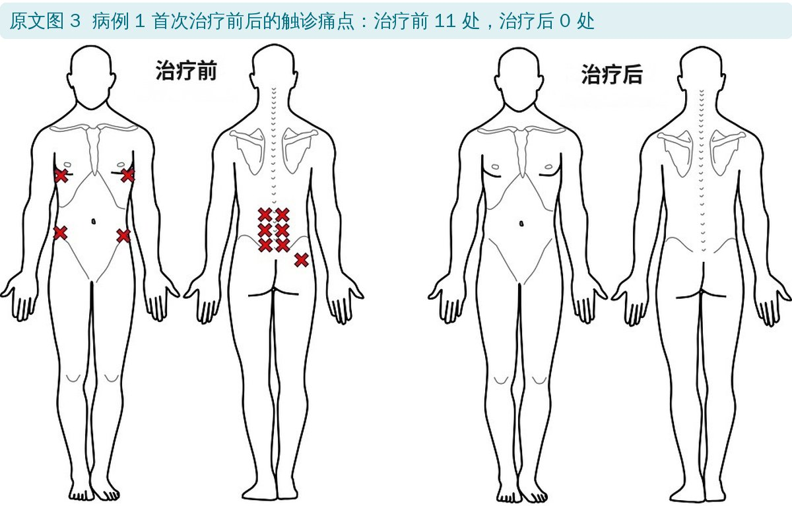
🔖原文图 3：病例 1 首次治疗前后的触诊痛点
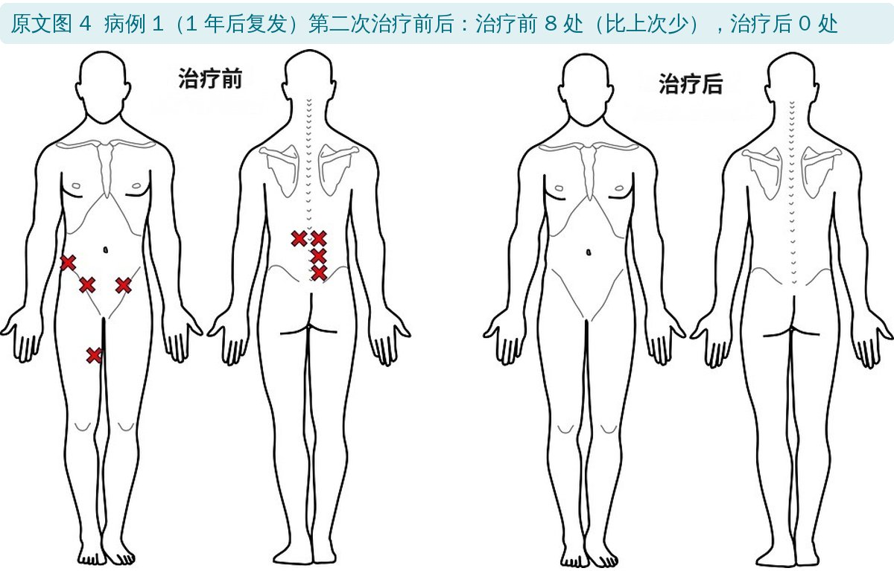
🔖原文图 4：病例 1 一年后复发时第二次治疗前后
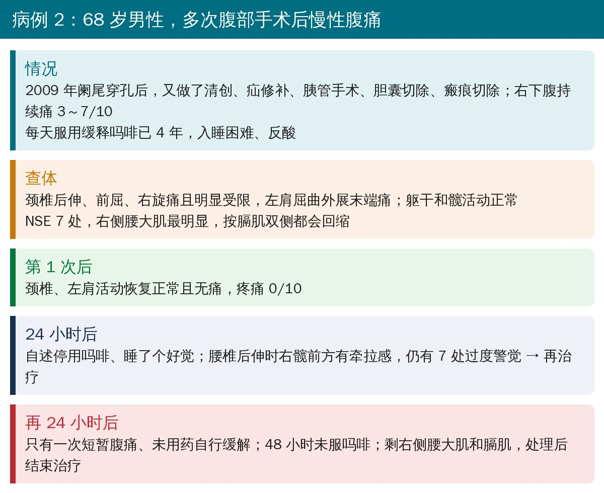
🔖病例 2（编者整理）
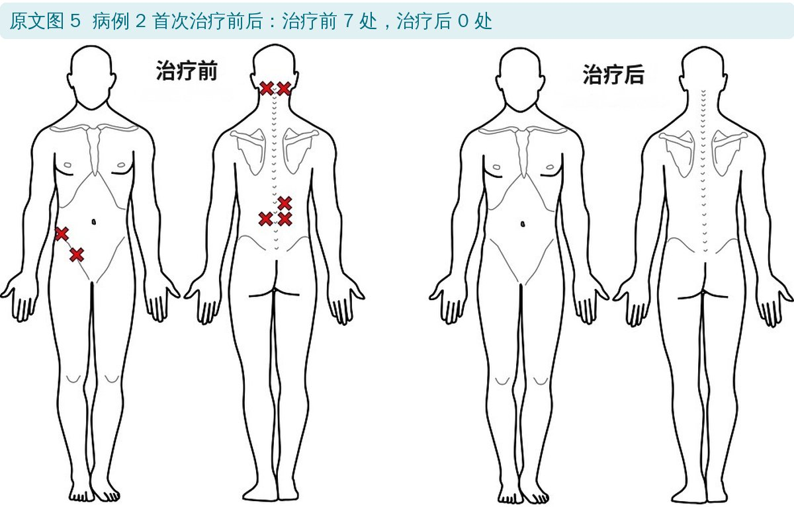
🔖原文图 5：病例 2 首次治疗前后
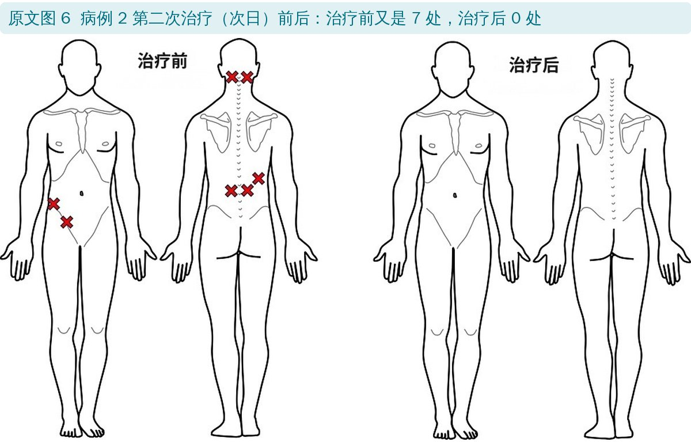
🔖原文图 6：病例 2 次日第二次治疗前后
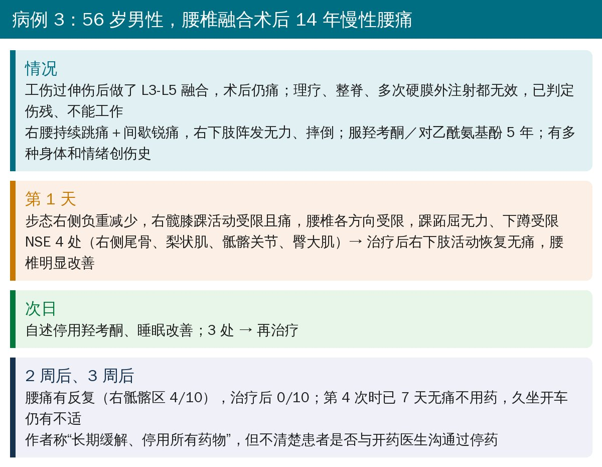
🔖病例 3（编者整理）
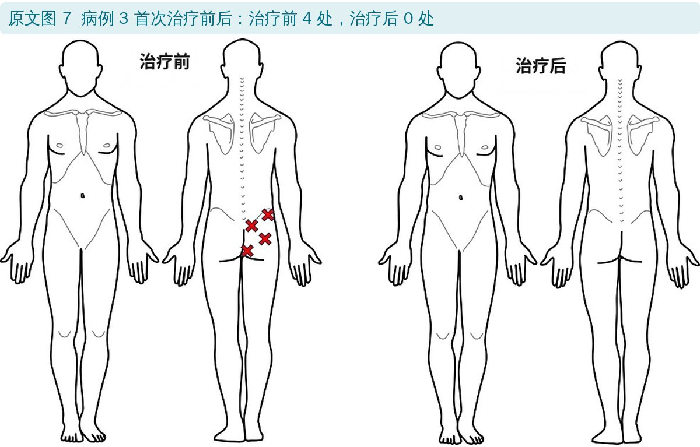
🔖原文图 7：病例 3 首次治疗前后
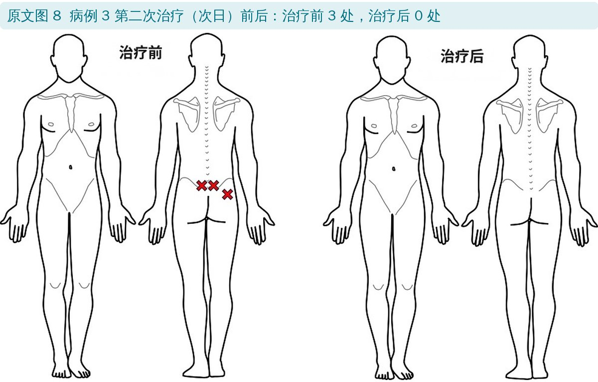
🔖原文图 8：病例 3 次日第二次治疗前后
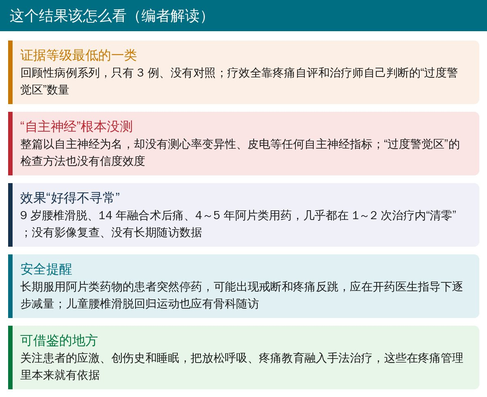
🔖编者解读
• 没有测量“自主神经”：题目叫自主神经再校准，但没有心率变异性、皮电、血压等任何客观指标，“交感过度”只是推测
• 评估和疗效指标都是主观的：“过度警觉区”由治疗师自己触诊判断，没有盲法、没有信度检验；疼痛评分是患者当场口头报告
• 很多因素混在一起：手法、触摸本身的放松、创伤回忆、呼吸、患者期望、自然病程……无法知道是哪一部分起作用
• 随访短：除病例 1 外，最长只有约 4 周
• 作者自己也承认需要有对照的大样本研究；致谢里注明文稿借助人工智能起草
• 病例 1 复发时，血液检查提示类风湿关节炎，随后又诊断为扩大性肌骨疼痛综合征，两者关系、是否接受风湿科治疗都没有交代
• 讨论里说病例系列“证明了 AR 的疗效”，局限性部分又说疗效需要对照研究来验证，前后口径不一
• 病例 3 只随访约 4 周，却写成“长期缓解”
• 慢性疼痛患者确实常有应激、睡眠差、过度警觉，关注创伤史、做疼痛教育、教放松呼吸都是有依据的做法
• 触诊时患者“一碰就躲”的反应可以作为敏化程度的线索，但不要把它当成可靠的诊断工具
• 不建议照搬“1～2 次治疗就停阿片类药物”：长期用药者停药要在开药医生指导下逐步减量
• 儿童腰椎滑脱、术后腹痛这类有明确病理的情况，手法只能作为辅助，仍需专科随访
欢迎关注骨科康复小黄公众号，获取更多物理治疗的专业知识！
📄参考文献：
Seton B, Pandey R, Piscura MK, Pearson WG Jr. Autonomic recalibration: a promising approach for alleviating myofascial pain explored in a retrospective case series. Cureus. 2024;16(1):e52450. doi:10.7759/cureus.52450
原文以知识共享署名 4.0（CC BY 4.0）协议开放获取。原文图 2～8 引自原文，中文标签为编者所加；原文图 1 由编者改画为中文；背景卡、病例卡和解读卡为编者整理。